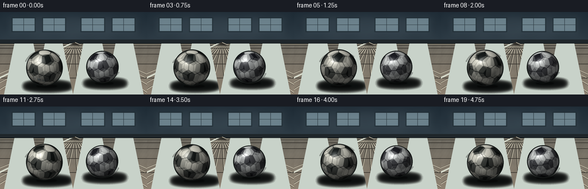
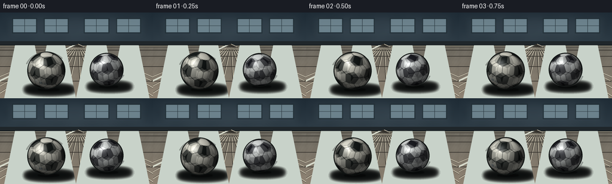

CODING AGENTS AS PIXEL WORLD MODELS
traex/GPT-5.6-Sol · instance_preservation_0027
点击播放 · 原生 RGB 像素
逐轮保存的候选
回放视频、检查图与代码变化。
每份候选均可单独播放。实际图片检查记录在下方工具轨迹中。
候选 01播放与检查图
点击播放 · 原生 RGB 像素

展开代码变化
--- 上一保存版本
+++ 本次保存版本
@@ -0,0 +1,293 @@
+from pathlib import Path
+import itertools
+import math
+import numpy as np
+from PIL import Image, ImageDraw, ImageFilter
+import artifact_io
+
+# Deterministic, fully procedural 2-D renderer for the requested clip.
+W, H, N, FPS = 256, 144, 20, 4.0
+SS = 4
+w, h = W * SS, H * SS
+rng = np.random.default_rng(2701)
+
+
+def smoothstep(a, b, x):
+ x = np.clip((x - a) / (b - a), 0.0, 1.0)
+ return x * x * (3.0 - 2.0 * x)
+
+
+def rotation(axis, angle):
+ axis = np.asarray(axis, np.float64)
+ axis /= np.linalg.norm(axis)
+ x, y, z = axis
+ c, s, C = math.cos(angle), math.sin(angle), 1.0 - math.cos(angle)
+ return np.array([
+ [c+x*x*C, x*y*C-z*s, x*z*C+y*s],
+ [y*x*C+z*s, c+y*y*C, y*z*C-x*s],
+ [z*x*C-y*s, z*y*C+x*s, c+z*z*C],
+ ])
+
+
+# Panel centers: the 12 vertices and 20 face normals of an icosahedron.
+# Their spherical Voronoi diagram reads as the pentagon/hexagon patchwork of
+# a traditional black-and-white football.
+phi = (1.0 + math.sqrt(5.0)) / 2.0
+verts = []
+for a in (-1.0, 1.0):
+ for b in (-phi, phi):
+ verts.append((0.0, a, b))
+ verts.append((a, b, 0.0))
+ verts.append((b, 0.0, a))
+ico = np.unique(np.round(np.array(verts, dtype=np.float64), 8), axis=0)
+ico /= np.linalg.norm(ico, axis=1, keepdims=True)
+# Faces are triples whose three sides are all icosahedron edges.
+dmat = np.linalg.norm(ico[:, None, :] - ico[None, :, :], axis=2)
+edge = np.min(dmat[dmat > 1e-6])
+faces = []
+for a, b, c in itertools.combinations(range(12), 3):
+ if max(abs(dmat[a,b]-edge), abs(dmat[a,c]-edge), abs(dmat[b,c]-edge)) < 1e-5:
+ q = ico[a] + ico[b] + ico[c]
+ faces.append(q / np.linalg.norm(q))
+face_centers = np.array(faces)
+panel_centers = np.vstack([ico, face_centers])
+assert panel_centers.shape == (32, 3)
+
+
+def make_background(frame_index):
+ """Quiet indoor training hall with a polished, low-perspective floor."""
+ yy, xx = np.mgrid[0:h, 0:w]
+ Y = yy / SS
+ X = xx / SS
+ horizon = 51.5
+ arr = np.empty((h, w, 3), np.float64)
+
+ # Wall: cool muted blue-gray, gently brighter near the windows.
+ wall_t = np.clip(Y / horizon, 0, 1)
+ arr[..., 0] = 38 + 12 * wall_t
+ arr[..., 1] = 51 + 13 * wall_t
+ arr[..., 2] = 61 + 13 * wall_t
+ # broad vignette, maintaining a strong central focal area
+ vig = ((X - 128) / 170) ** 2 + ((Y - 68) / 125) ** 2
+ arr -= np.clip(vig[..., None] * 9, 0, 10)
+
+ # Fine plaster mottling, fixed over time.
+ grain = (np.sin(X * 0.113) * np.sin(Y * 0.183) +
+ 0.45 * np.sin(X * 0.037 + Y * 0.071))
+ arr += grain[..., None] * 1.25
+
+ # Floor, warm but restrained. Perspective depth lightens toward horizon.
+ floor = Y >= horizon
+ d = np.clip((Y - horizon) / (H - horizon), 0, 1)
+ fcol = np.stack([106 + 38*d, 103 + 29*d, 94 + 22*d], axis=-1)
+ # tiny aggregate/wood-fiber variation
+ fnoise = (1.8*np.sin(X*0.31 + Y*0.071) +
+ 1.1*np.sin(X*0.057 - Y*0.53) +
+ 0.7*np.sin(X*1.23 + Y*0.77))
+ fcol += fnoise[..., None]
+ arr[floor] = fcol[floor]
+
+ im = Image.fromarray(np.uint8(np.clip(arr, 0, 255)), 'RGB')
+ dr = ImageDraw.Draw(im, 'RGBA')
+ S = SS
+
+ # High windows and their soft pools of daylight.
+ for x0, x1 in [(20, 62), (73, 115), (140, 183), (194, 236)]:
+ dr.rectangle((x0*S, 9*S, x1*S, 35*S), fill=(91, 112, 124, 255), outline=(22, 33, 41, 220), width=2*S)
+ dr.rectangle(((x0+2)*S, 11*S, (x1-2)*S, 33*S), fill=(119, 142, 151, 120))
+ dr.line(((x0+x1)//2*S, 10*S, (x0+x1)//2*S, 34*S), fill=(31, 43, 50, 180), width=S)
+ dr.line((x0*S, 22*S, x1*S, 22*S), fill=(31, 43, 50, 150), width=S)
+ # Window bloom on the wall.
+ glow = Image.new('RGBA', (w, h), (0,0,0,0))
+ gd = ImageDraw.Draw(glow, 'RGBA')
+ gd.rectangle((12*S, 6*S, 244*S, 43*S), fill=(150, 174, 180, 20))
+ glow = glow.filter(ImageFilter.GaussianBlur(7*S))
+ im = Image.alpha_composite(im.convert('RGBA'), glow)
+ dr = ImageDraw.Draw(im, 'RGBA')
+
+ # Baseboard and a dark floor/wall contact line.
+ dr.rectangle((0, 48*S, w, 55*S), fill=(31, 38, 42, 255))
+ dr.line((0, 55*S, w, 55*S), fill=(14, 18, 20, 210), width=S)
+ dr.line((0, 56*S, w, 56*S), fill=(181, 174, 153, 70), width=S)
+
+ # Perspective expansion joints/plank seams converging near center.
+ vanish = (130*S, 53*S)
+ for xb in range(-90, 351, 25):
+ dr.line((vanish[0], vanish[1], xb*S, h), fill=(50, 48, 43, 35), width=S)
+ dr.line((vanish[0]+S, vanish[1], (xb+1)*S, h), fill=(215, 207, 185, 18), width=S)
+ # Cross seams packed toward the horizon.
+ for frac in (0.11, 0.22, 0.37, 0.56, 0.78):
+ yline = (55 + (H-55)*(frac**1.58))*S
+ dr.line((0, int(yline), w, int(yline)), fill=(52, 49, 44, 34), width=S)
+
+ # A subdued court stripe goes behind the subjects, reinforcing floor plane.
+ dr.polygon([(0, 113*S), (0, 116*S), (126*S, 55*S), (121*S, 55*S)], fill=(213, 216, 201, 68))
+ # Very subtle highlight reflected from windows.
+ for x0, x1 in ((25,58), (78,109), (145,178), (201,232)):
+ dr.polygon([(x0*S,55*S),(x1*S,55*S),((x1+18)*S),h,((x0-18)*S),h], fill=(200,210,201,7))
+ return im
+
+
+def add_shadow(layer, cx, contact_y, radius, strength=1.0):
+ """Soft contact/ambient shadow with a tight core anchoring the ball."""
+ sh = Image.new('RGBA', (w, h), (0, 0, 0, 0))
+ d = ImageDraw.Draw(sh, 'RGBA')
+ cx, cy, r = cx*SS, contact_y*SS, radius*SS
+ d.ellipse((cx-r*1.20, cy-r*.18, cx+r*1.38, cy+r*.20), fill=(5, 8, 8, int(118*strength)))
+ sh = sh.filter(ImageFilter.GaussianBlur(3.2*SS))
+ layer.alpha_composite(sh)
+ core = Image.new('RGBA', (w, h), (0,0,0,0))
+ cd = ImageDraw.Draw(core, 'RGBA')
+ cd.ellipse((cx-r*.55, cy-r*.065, cx+r*.62, cy+r*.09), fill=(3,4,4,int(105*strength)))
+ core = core.filter(ImageFilter.GaussianBlur(.9*SS))
+ layer.alpha_composite(core)
+
+
+def panel_texture(q, variant):
+ """Return textured albedo for local unit-sphere directions q."""
+ dots = q @ panel_centers.T
+ order = np.argpartition(dots, -2, axis=1)[:, -2:]
+ vals = np.take_along_axis(dots, order, axis=1)
+ hi_sel = np.argmax(vals, axis=1)
+ nearest = order[np.arange(len(q)), hi_sel]
+ top = vals[np.arange(len(q)), hi_sel]
+ second = vals[np.arange(len(q)), 1-hi_sel]
+ black = nearest < 12
+
+ if variant == 0:
+ white = np.array([230., 229., 215.])
+ dark = np.array([24., 29., 28.])
+ else:
+ white = np.array([224., 228., 226.])
+ dark = np.array([27., 28., 34.])
+ col = np.where(black[:, None], dark, white)
+
+ # Each leather panel varies slightly; low-amplitude pebbling avoids flat CG color.
+ panel_var = (((nearest * 37 + variant * 17) % 11) - 5) * 0.75
+ col += panel_var[:, None]
+ pebble = (np.sin(q[:,0]*121 + q[:,1]*83) * np.sin(q[:,2]*137 - q[:,0]*41))
+ col += pebble[:,None] * np.where(black[:,None], 1.1, 2.1)
+
+ # Recessed dark seams at every spherical Voronoi boundary.
+ seam = 1.0 - smoothstep(0.0045, 0.020, top-second)
+ seam_col = np.array([18., 21., 20.]) if variant == 0 else np.array([19., 20., 24.])
+ col = col*(1-seam[:,None]*.88) + seam_col*seam[:,None]*.88
+
+ # Small rotating manufacturer-style accent, unique to each instance.
+ anchor = panel_centers[17 if variant == 0 else 25]
+ ad = q @ anchor
+ accent = smoothstep(math.cos(.115), math.cos(.075), ad) * (~black)
+ acol = np.array([38., 68., 90.]) if variant == 0 else np.array([132., 67., 39.])
+ col = col*(1-accent[:,None]*.72) + acol*accent[:,None]*.72
+ return col
+
+
+def render_ball(layer, cx, cy, radius, axis, angle, variant, frame_step):
+ """Rasterize a lit sphere; panel coordinates rotate, illumination does not."""
+ Cx, Cy, R = cx*SS, cy*SS, radius*SS
+ x0 = max(0, int(Cx-R-2)); x1 = min(w, int(Cx+R+3))
+ y0 = max(0, int(Cy-R-2)); y1 = min(h, int(Cy+R+3))
+ yy, xx = np.mgrid[y0:y1, x0:x1]
+ nx = (xx + .5 - Cx) / R
+ ny = -(yy + .5 - Cy) / R
+ rr = nx*nx + ny*ny
+ mask = rr <= 1.0
+ z = np.sqrt(np.maximum(0, 1.0-rr))
+ normals = np.stack([nx, ny, z], axis=-1)
+ nw = normals[mask]
+
+ # Three shutter samples preserve readable patches while signaling fast spin.
+ cols = []
+ for off, wt in ((-.16, .24), (0.0, .52), (.16, .24)):
+ Rm = rotation(axis, angle + off*frame_step)
+ local = nw @ Rm # inverse rotation for row vectors
+ cols.append(panel_texture(local, variant) * wt)
+ albedo = sum(cols)
+
+ # Soft key from high camera-left, broad ambient, and a glossy leather highlight.
+ L = np.array([-0.46, 0.69, 0.56]); L /= np.linalg.norm(L)
+ diffuse = np.clip(nw @ L, 0, 1)
+ rim = np.clip(nw[:,2], 0, 1)
+ shade = .34 + .64*diffuse
+ shade *= .78 + .22*np.sqrt(rim)
+ Hvec = L + np.array([0.,0.,1.]); Hvec /= np.linalg.norm(Hvec)
+ spec = np.clip(nw @ Hvec, 0, 1) ** 42
+ rgb = albedo*shade[:,None] + spec[:,None]*72
+ # Gentle cool bounce from the polished floor on the lower hemisphere.
+ bounce = np.clip(-nw[:,1], 0, 1) * np.clip(nw[:,2],0,1) * 9
+ rgb += bounce[:,None] * np.array([.72,.79,.82])
+
+ # Strong silhouette/contact darkening, especially at the very bottom.
+ rgb *= (0.88 + .12*smoothstep(0.03, .36, nw[:,2]))[:,None]
+ lower = smoothstep(.70, .98, -nw[:,1])
+ rgb *= (1-.18*lower[:,None])
+
+ patch = np.zeros((y1-y0, x1-x0, 4), np.uint8)
+ patch[...,3] = np.uint8(mask*255)
+ patch_rgb = np.zeros((y1-y0, x1-x0, 3), np.uint8)
+ patch_rgb[mask] = np.uint8(np.clip(rgb,0,255))
+ patch[...,:3] = patch_rgb
+ ball = Image.fromarray(patch, 'RGBA')
+
+ # Crisp-but-natural outline then sphere. Supersampling will anti-alias it.
+ outline = Image.new('RGBA', (w,h), (0,0,0,0))
+ od = ImageDraw.Draw(outline, 'RGBA')
+ od.ellipse((Cx-R-1.2*SS, Cy-R-1.2*SS, Cx+R+1.2*SS, Cy+R+1.2*SS), fill=(16,20,19,225))
+ layer.alpha_composite(outline)
+ layer.alpha_composite(ball, (x0,y0))
+
+ # Tiny contact occlusion over the bottom edge.
+ occ = Image.new('RGBA', (w,h), (0,0,0,0))
+ od = ImageDraw.Draw(occ, 'RGBA')
+ od.ellipse((Cx-R*.28, Cy+R*.91, Cx+R*.31, Cy+R*1.025), fill=(3,5,5,82))
+ occ = occ.filter(ImageFilter.GaussianBlur(.65*SS))
+ layer.alpha_composite(occ)
+
+
+def render_frame(i):
+ t = i / FPS
+ base = make_background(i).convert('RGBA')
+
+ # Persistent identities: left is larger/warmer and closer; right smaller/cooler.
+ cx1 = 77.5 + .65*math.sin(t*2.1)
+ cy1 = 97.4 + .30*math.sin(t*4.2)
+ r1 = 30.7
+ cx2 = 178.0 + .55*math.sin(t*1.8 + .9)
+ cy2 = 96.0 + .25*math.sin(t*3.8 + .5)
+ r2 = 27.0
+
+ add_shadow(base, cx1+2.8, cy1+r1+1.0, r1, 1.0)
+ add_shadow(base, cx2+2.4, cy2+r2+1.0, r2, .92)
+
+ # Around 1.2â1.45 revolutions/second, with opposite senses: unambiguously rapid.
+ speed1 = 2*math.pi*1.22
+ speed2 = -2*math.pi*1.43
+ axis1 = np.array([.18, .90, .39])
+ axis2 = np.array([-.25, .91, .33])
+ render_ball(base, cx1, cy1, r1, axis1, .33 + speed1*t, 0, speed1/FPS)
+ render_ball(base, cx2, cy2, r2, axis2, 1.17 + speed2*t, 1, speed2/FPS)
+
+ # A couple of low-opacity curved speed accents near the floor, not touching silhouettes.
+ # They are deliberately faint so the rotating panel maps remain the primary cue.
+ accents = Image.new('RGBA', (w,h), (0,0,0,0))
+ ad = ImageDraw.Draw(accents, 'RGBA')
+ phase = (i % 4) * 2
+ ad.arc(((cx1-r1-5)*SS,(cy1-r1+phase)*SS,(cx1+r1+5)*SS,(cy1+r1-phase)*SS), 202, 318, fill=(220,224,214,28), width=SS)
+ ad.arc(((cx2-r2-4)*SS,(cy2-r2+6-phase)*SS,(cx2+r2+4)*SS,(cy2+r2-4+phase)*SS), 22, 139, fill=(217,222,220,25), width=SS)
+ accents = accents.filter(ImageFilter.GaussianBlur(.45*SS))
+ base.alpha_composite(accents)
+
+ # Downsample once for clean subpixel edges and export RGB.
+ out = base.convert('RGB').resize((W,H), Image.Resampling.LANCZOS)
+ return np.asarray(out, dtype=np.uint8)
+
+
+def main():
+ frames = np.stack([render_frame(i) for i in range(N)], axis=0)
+ assert frames.shape == (N,H,W,3) and frames.dtype == np.uint8
+ case_dir = Path(__file__).resolve().parent
+ artifact_io.save(frames, case_dir)
+
+
+if __name__ == '__main__':
+ main()
候选 02播放与检查图
点击播放 · 原生 RGB 像素


展开代码变化
--- 上一保存版本
+++ 本次保存版本
@@ -87,7 +87,7 @@
fcol += fnoise[..., None]
arr[floor] = fcol[floor]
- im = Image.fromarray(np.uint8(np.clip(arr, 0, 255)), 'RGB')
+ im = Image.fromarray(np.uint8(np.clip(arr, 0, 255)))
dr = ImageDraw.Draw(im, 'RGBA')
S = SS
@@ -227,7 +227,7 @@
patch_rgb = np.zeros((y1-y0, x1-x0, 3), np.uint8)
patch_rgb[mask] = np.uint8(np.clip(rgb,0,255))
patch[...,:3] = patch_rgb
- ball = Image.fromarray(patch, 'RGBA')
+ ball = Image.fromarray(patch)
# Crisp-but-natural outline then sphere. Supersampling will anti-alias it.
outline = Image.new('RGBA', (w,h), (0,0,0,0))
可观测工具轨迹
实际执行的命令与返回图片。
命令 1exit 0
/bin/bash -lc "find . -maxdepth 2 -type f -printf '%p\\n' | sort && printf '\\n--- tools ---\\n' && command -v ffmpeg || true && command -v python3 || true"
命令 2exit 0
/bin/bash -lc "cat prompt.txt && printf '\\n--- GENERATION_RULES.md ---\\n' && cat GENERATION_RULES.md && printf '\\n--- task_spec.json ---\\n' && cat task_spec.json"
命令 3exit 0
/bin/bash -lc "sed -n '1,240p' artifact_io.py"
命令 4exit 0
/bin/bash -lc "cat > generate.py <<'PY'
from pathlib import Path
import itertools
import math
import numpy as np
from PIL import Image, ImageDraw, ImageFilter
import artifact_io
# Deterministic, fully procedural 2-D renderer for the requested clip.
W, H, N, FPS = 256, 144, 20, 4.0
SS = 4
w, h = W * SS, H * SS
rng = np.random.default_rng(2701)
def smoothstep(a, b, x):
x = np.clip((x - a) / (b - a), 0.0, 1.0)
return x * x * (3.0 - 2.0 * x)
def rotation(axis, angle):
axis = np.asarray(axis, np.float64)
axis /= np.linalg.norm(axis)
x, y, z = axis
c, s, C = math.cos(angle), math.sin(angle), 1.0 - math.cos(angle)
return np.array([
[c+x*x*C, x*y*C-z*s, x*z*C+y*s],
[y*x*C+z*s, c+y*y*C, y*z*C-x*s],
[z*x*C-y*s, z*y*C+x*s, c+z*z*C],
])
# Panel centers: the 12 vertices and 20 face normals of an icosahedron.
# Their spherical Voronoi diagram reads as the pentagon/hexagon patchwork of
# a traditional black-and-white football.
phi = (1.0 + math.sqrt(5.0)) / 2.0
verts = []
for a in (-1.0, 1.0):
for b in (-phi, phi):
verts.append((0.0, a, b))
verts.append((a, b, 0.0))
verts.append((b, 0.0, a))
ico = np.unique(np.round(np.array(verts, dtype=np.float64), 8), axis=0)
ico /= np.linalg.norm(ico, axis=1, keepdims=True)
# Faces are triples whose three sides are all icosahedron edges.
dmat = np.linalg.norm(ico[:, None, :] - ico[None, :, :], axis=2)
edge = np.min(dmat[dmat > 1e-6])
faces = []
for a, b, c in itertools.combinations(range(12), 3):
if max(abs(dmat[a,b]-edge), abs(dmat[a,c]-edge), abs(dmat[b,c]-edge)) < 1e-5:
q = ico[a] + ico[b] + ico[c]
faces.append(q / np.linalg.norm(q))
face_centers = np.array(faces)
panel_centers = np.vstack([ico, face_centers])
assert panel_centers.shape == (32, 3)
def make_background(frame_index):
\"\"\"Quiet indoor training hall with a polished, low-perspective floor.\"\"\"
yy, xx = np.mgrid[0:h, 0:w]
Y = yy / SS
X = xx / SS
horizon = 51.5
arr = np.empty((h, w, 3), np.float64)
# Wall: cool muted blue-gray, gently brighter near the windows.
wall_t = np.clip(Y / horizon, 0, 1)
arr[..., 0] = 38 + 12 * wall_t
arr[..., 1] = 51 + 13 * wall_t
arr[..., 2] = 61 + 13 * wall_t
# broad vignette, maintaining a strong central focal area
vig = ((X - 128) / 170) ** 2 + ((Y - 68) / 125) ** 2
arr -= np.clip(vig[..., None] * 9, 0, 10)
# Fine plaster mottling, fixed over time.
grain = (np.sin(X * 0.113) * np.sin(Y * 0.183) +
0.45 * np.sin(X * 0.037 + Y * 0.071))
arr += grain[..., None] * 1.25
# Floor, warm but restrained. Perspective depth lightens toward horizon.
floor = Y >= horizon
d = np.clip((Y - horizon) / (H - horizon), 0, 1)
fcol = np.stack([106 + 38*d, 103 + 29*d, 94 + 22*d], axis=-1)
# tiny aggregate/wood-fiber variation
fnoise = (1.8*np.sin(X*0.31 + Y*0.071) +
1.1*np.sin(X*0.057 - Y*0.53) +
0.7*np.sin(X*1.23 + Y*0.77))
fcol += fnoise[..., None]
arr[floor] = fcol[floor]
im = Image.fromarray(np.uint8(np.clip(arr, 0, 255)), 'RGB')
dr = ImageDraw.Draw(im, 'RGBA')
S = SS
# High windows and their soft pools of daylight.
for x0, x1 in [(20, 62), (73, 115), (140, 183), (194, 236)]:
dr.rectangle((x0*S, 9*S, x1*S, 35*S), fill=(91, 112, 124, 255), outline=(22, 33, 41, 220), width=2*S)
dr.rectangle(((x0+2)*S, 11*S, (x1-2)*S, 33*S), fill=(119, 142, 151, 120))
dr.line(((x0+x1)//2*S, 10*S, (x0+x1)//2*S, 34*S), fill=(31, 43, 50, 180), width=S)
dr.line((x0*S, 22*S, x1*S, 22*S), fill=(31, 43, 50, 150), width=S)
# Window bloom on the wall.
glow = Image.new('RGBA', (w, h), (0,0,0,0))
gd = ImageDraw.Draw(glow, 'RGBA')
gd.rectangle((12*S, 6*S, 244*S, 43*S), fill=(150, 174, 180, 20))
glow = glow.filter(ImageFilter.GaussianBlur(7*S))
im = Image.alpha_composite(im.convert('RGBA'), glow)
dr = ImageDraw.Draw(im, 'RGBA')
# Baseboard and a dark floor/wall contact line.
dr.rectangle((0, 48*S, w, 55*S), fill=(31, 38, 42, 255))
dr.line((0, 55*S, w, 55*S), fill=(14, 18, 20, 210), width=S)
dr.line((0, 56*S, w, 56*S), fill=(181, 174, 153, 70), width=S)
# Perspective expansion joints/plank seams converging near center.
vanish = (130*S, 53*S)
for xb in range(-90, 351, 25):
dr.line((vanish[0], vanish[1], xb*S, h), fill=(50, 48, 43, 35), width=S)
dr.line((vanish[0]+S, vanish[1], (xb+1)*S, h), fill=(215, 207, 185, 18), width=S)
# Cross seams packed toward the horizon.
for frac in (0.11, 0.22, 0.37, 0.56, 0.78):
yline = (55 + (H-55)*(frac**1.58))*S
dr.line((0, int(yline), w, int(yline)), fill=(52, 49, 44, 34), width=S)
# A subdued court stripe goes behind the subjects, reinforcing floor plane.
dr.polygon([(0, 113*S), (0, 116*S), (126*S, 55*S), (121*S, 55*S)], fill=(213, 216, 201, 68))
# Very subtle highlight reflected from windows.
for x0, x1 in ((25,58), (78,109), (145,178), (201,232)):
dr.polygon([(x0*S,55*S),(x1*S,55*S),((x1+18)*S),h,((x0-18)*S),h], fill=(200,210,201,7))
return im
def add_shadow(layer, cx, contact_y, radius, strength=1.0):
\"\"\"Soft contact/ambient shadow with a tight core anchoring the ball.\"\"\"
sh = Image.new('RGBA', (w, h), (0, 0, 0, 0))
d = ImageDraw.Draw(sh, 'RGBA')
cx, cy, r = cx*SS, contact_y*SS, radius*SS
d.ellipse((cx-r*1.20, cy-r*.18, cx+r*1.38, cy+r*.20), fill=(5, 8, 8, int(118*strength)))
sh = sh.filter(ImageFilter.GaussianBlur(3.2*SS))
layer.alpha_composite(sh)
core = Image.new('RGBA', (w, h), (0,0,0,0))
cd = ImageDraw.Draw(core, 'RGBA')
cd.ellipse((cx-r*.55, cy-r*.065, cx+r*.62, cy+r*.09), fill=(3,4,4,int(105*strength)))
core = core.filter(ImageFilter.GaussianBlur(.9*SS))
layer.alpha_composite(core)
def panel_texture(q, variant):
\"\"\"Return textured albedo for local unit-sphere directions q.\"\"\"
dots = q @ panel_centers.T
order = np.argpartition(dots, -2, axis=1)[:, -2:]
vals = np.take_along_axis(dots, order, axis=1)
hi_sel = np.argmax(vals, axis=1)
nearest = order[np.arange(len(q)), hi_sel]
top = vals[np.arange(len(q)), hi_sel]
second = vals[np.arange(len(q)), 1-hi_sel]
black = nearest < 12
if variant == 0:
white = np.array([230., 229., 215.])
dark = np.array([24., 29., 28.])
else:
white = np.array([224., 228., 226.])
dark = np.array([27., 28., 34.])
col = np.where(black[:, None], dark, white)
# Each leather panel varies slightly; low-amplitude pebbling avoids flat CG color.
panel_var = (((nearest * 37 + variant * 17) % 11) - 5) * 0.75
col += panel_var[:, None]
pebble = (np.sin(q[:,0]*121 + q[:,1]*83) * np.sin(q[:,2]*137 - q[:,0]*41))
col += pebble[:,None] * np.where(black[:,None], 1.1, 2.1)
# Recessed dark seams at every spherical Voronoi boundary.
seam = 1.0 - smoothstep(0.0045, 0.020, top-second)
seam_col = np.array([18., 21., 20.]) if variant == 0 else np.array([19., 20., 24.])
col = col*(1-seam[:,None]*.88) + seam_col*seam[:,None]*.88
# Small rotating manufacturer-style accent, unique to each instance.
anchor = panel_centers[17 if variant == 0 else 25]
ad = q @ anchor
accent = smoothstep(math.cos(.115), math.cos(.075), ad) * (~black)
acol = np.array([38., 68., 90.]) if variant == 0 else np.array([132., 67., 39.])
col = col*(1-accent[:,None]*.72) + acol*accent[:,None]*.72
return col
def render_ball(layer, cx, cy, radius, axis, angle, variant, frame_step):
\"\"\"Rasterize a lit sphere; panel coordinates rotate, illumination does not.\"\"\"
Cx, Cy, R = cx*SS, cy*SS, radius*SS
x0 = max(0, int(Cx-R-2)); x1 = min(w, int(Cx+R+3))
y0 = max(0, int(Cy-R-2)); y1 = min(h, int(Cy+R+3))
yy, xx = np.mgrid[y0:y1, x0:x1]
nx = (xx + .5 - Cx) / R
ny = -(yy + .5 - Cy) / R
rr = nx*nx + ny*ny
mask = rr <= 1.0
z = np.sqrt(np.maximum(0, 1.0-rr))
normals = np.stack([nx, ny, z], axis=-1)
nw = normals[mask]
# Three shutter samples preserve readable patches while signaling fast spin.
cols = []
for off, wt in ((-.16, .24), (0.0, .52), (.16, .24)):
Rm = rotation(axis, angle + off*frame_step)
local = nw @ Rm # inverse rotation for row vectors
cols.append(panel_texture(local, variant) * wt)
albedo = sum(cols)
# Soft key from high camera-left, broad ambient, and a glossy leather highlight.
L = np.array([-0.46, 0.69, 0.56]); L /= np.linalg.norm(L)
diffuse = np.clip(nw @ L, 0, 1)
rim = np.clip(nw[:,2], 0, 1)
shade = .34 + .64*diffuse
shade *= .78 + .22*np.sqrt(rim)
Hvec = L + np.array([0.,0.,1.]); Hvec /= np.linalg.norm(Hvec)
spec = np.clip(nw @ Hvec, 0, 1) ** 42
rgb = albedo*shade[:,None] + spec[:,None]*72
# Gentle cool bounce from the polished floor on the lower hemisphere.
bounce = np.clip(-nw[:,1], 0, 1) * np.clip(nw[:,2],0,1) * 9
rgb += bounce[:,None] * np.array([.72,.79,.82])
# Strong silhouette/contact darkening, especially at the very bottom.
rgb *= (0.88 + .12*smoothstep(0.03, .36, nw[:,2]))[:,None]
lower = smoothstep(.70, .98, -nw[:,1])
rgb *= (1-.18*lower[:,None])
patch = np.zeros((y1-y0, x1-x0, 4), np.uint8)
patch[...,3] = np.uint8(mask*255)
patch_rgb = np.zeros((y1-y0, x1-x0, 3), np.uint8)
patch_rgb[mask] = np.uint8(np.clip(rgb,0,255))
patch[...,:3] = patch_rgb
ball = Image.fromarray(patch, 'RGBA')
# Crisp-but-natural outline then sphere. Supersampling will anti-alias it.
outline = Image.new('RGBA', (w,h), (0,0,0,0))
od = ImageDraw.Draw(outline, 'RGBA')
od.ellipse((Cx-R-1.2*SS, Cy-R-1.2*SS, Cx+R+1.2*SS, Cy+R+1.2*SS), fill=(16,20,19,225))
layer.alpha_composite(outline)
layer.alpha_composite(ball, (x0,y0))
# Tiny contact occlusion over the bottom edge.
occ = Image.new('RGBA', (w,h), (0,0,0,0))
od = ImageDraw.Draw(occ, 'RGBA')
od.ellipse((Cx-R*.28, Cy+R*.91, Cx+R*.31, Cy+R*1.025), fill=(3,5,5,82))
occ = occ.filter(ImageFilter.GaussianBlur(.65*SS))
layer.alpha_composite(occ)
def render_frame(i):
t = i / FPS
base = make_background(i).convert('RGBA')
# Persistent identities: left is larger/warmer and closer; right smaller/cooler.
cx1 = 77.5 + .65*math.sin(t*2.1)
cy1 = 97.4 + .30*math.sin(t*4.2)
r1 = 30.7
cx2 = 178.0 + .55*math.sin(t*1.8 + .9)
cy2 = 96.0 + .25*math.sin(t*3.8 + .5)
r2 = 27.0
add_shadow(base, cx1+2.8, cy1+r1+1.0, r1, 1.0)
add_shadow(base, cx2+2.4, cy2+r2+1.0, r2, .92)
# Around 1.2â1.45 revolutions/second, with opposite senses: unambiguously rapid.
speed1 = 2*math.pi*1.22
speed2 = -2*math.pi*1.43
axis1 = np.array([.18, .90, .39])
axis2 = np.array([-.25, .91, .33])
render_ball(base, cx1, cy1, r1, axis1, .33 + speed1*t, 0, speed1/FPS)
render_ball(base, cx2, cy2, r2, axis2, 1.17 + speed2*t, 1, speed2/FPS)
# A couple of low-opacity curved speed accents near the floor, not touching silhouettes.
# They are deliberately faint so the rotating panel maps remain the primary cue.
accents = Image.new('RGBA', (w,h), (0,0,0,0))
ad = ImageDraw.Draw(accents, 'RGBA')
phase = (i % 4) * 2
ad.arc(((cx1-r1-5)*SS,(cy1-r1+phase)*SS,(cx1+r1+5)*SS,(cy1+r1-phase)*SS), 202, 318, fill=(220,224,214,28), width=SS)
ad.arc(((cx2-r2-4)*SS,(cy2-r2+6-phase)*SS,(cx2+r2+4)*SS,(cy2+r2-4+phase)*SS), 22, 139, fill=(217,222,220,25), width=SS)
accents = accents.filter(ImageFilter.GaussianBlur(.45*SS))
base.alpha_composite(accents)
# Downsample once for clean subpixel edges and export RGB.
out = base.convert('RGB').resize((W,H), Image.Resampling.LANCZOS)
return np.asarray(out, dtype=np.uint8)
def main():
frames = np.stack([render_frame(i) for i in range(N)], axis=0)
assert frames.shape == (N,H,W,3) and frames.dtype == np.uint8
case_dir = Path(__file__).resolve().parent
artifact_io.save(frames, case_dir)
if __name__ == '__main__':
main()
PY
python3 generate.py
python3 - <<'PY'
from pathlib import Path
import numpy as np
from PIL import Image
p=Path('.')
z=np.load('pixels.npz')['pixels']
print('pixels', z.shape, z.dtype, 'range', int(z.min()), int(z.max()))
print('frames', len(list((p/'frames').glob('*.png'))))
print('artifacts', [(x.name, x.stat().st_size) for x in [p/'pixels.npz',p/'index.html',p/'inspection.png',p/'transition_check.png']])
# Decode packed tensor and report frame-to-frame changed-pixel fraction / mean RGB delta.
rgb=np.stack([(z>>16)&255,(z>>8)&255,z&255],axis=-1).transpose(2,0,1,3).astype(np.int16)
d=np.abs(np.diff(rgb,axis=0))
print('temporal mean deltas', np.round(d.mean((1,2,3)),2).tolist())
print('changed fractions', np.round((d.max(3)>4).mean((1,2)),3).tolist())
PY"命令 5exit 1
/bin/bash -lc "python3 - <<'PY'
p='generate.py'
s=open(p).read().replace(\"Image.fromarray(np.uint8(np.clip(arr, 0, 255)), 'RGB')\", \"Image.fromarray(np.uint8(np.clip(arr, 0, 255)))\").replace(\"Image.fromarray(patch, 'RGBA')\", \"Image.fromarray(patch)\")
open(p,'w').write(s)
PY
python3 generate.py >/tmp/regenerate.log 2>&1
python3 - <<'PY'
import json
from pathlib import Path
import numpy as np
from PIL import Image
root=Path('.')
spec=json.loads((root/'task_spec.json').read_text())
files=sorted((root/'frames').glob('*.png'))
assert len(files)==spec['frames']==20
for f in files:
im=Image.open(f)
assert im.mode=='RGB' and im.size==(spec['width'],spec['height'])
z=np.load(root/'pixels.npz')['pixels']
assert z.shape==(spec['height'],spec['width'],spec['frames']) and z.dtype==np.uint32
for name in ('generate.py','pixels.npz','index.html','inspection.png','transition_check.png'):
p=root/name
assert p.is_file() and p.stat().st_size>0
print('PASS: runnable generator; 20/20 RGB frames; 256x144; all required artifacts present')
print('frame byte sizes:', min(f.stat().st_size for f in files), 'to', max(f.stat().st_size for f in files))
PY
cat /tmp/regenerate.log"命令 6exit 0
/bin/bash -lc "python3 generate.py && python3 - <<'PY'
import json
from pathlib import Path
import numpy as np
from PIL import Image
root=Path('.')
spec=json.loads((root/'task_spec.json').read_text())
files=sorted((root/'frames').glob('*.png'))
assert len(files)==spec['frames']==20
assert all(Image.open(f).mode=='RGB' and Image.open(f).size==(256,144) for f in files)
z=np.load(root/'pixels.npz')['pixels']
assert z.shape==(144,256,20) and z.dtype==np.uint32
assert all((root/n).is_file() and (root/n).stat().st_size for n in ('generate.py','pixels.npz','index.html','inspection.png','transition_check.png'))
print('PASS: clean regeneration and complete artifact validation')
PY"保存候选 2 份；完成命令 6 次；可验证图片返回 0 张。原始 API 响应与完整日志保留在本地。